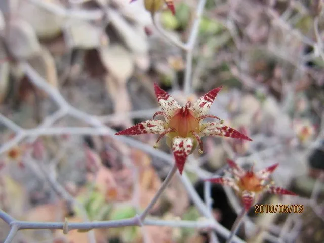

多肉植物 · 植物界
桃蛋 Graptopetalum amethystinum

景天科风车草属多年生肉质植物，叶片卵圆肥厚、覆白粉呈粉紫色，出状态时如一枚枚水蜜桃，是多肉界的明星品种。
- 分类
- 门被子植物门纲木兰纲目虎耳草目科景天科属风车草属
- 栖息环境
- 原产墨西哥高原半干旱山地，栽培需充足光照、干燥通风
- 地理分布
- 原产墨西哥；中国各地作为观赏多肉广泛栽培
- 保护级别
- 暂无评估；栽培观赏植物，不涉及保护等级
物种志
桃蛋为景天科风车草属多年生肉质植物，茎短粗，叶片排列成松散的莲座状。叶片卵圆形，肥厚多汁，先端圆钝，表面覆一层白色果粉，在充足光照和温差下呈粉紫色至桃红色，形似小水蜜桃。花期春季，花茎从叶腋抽出，花小，星形，黄白色；蓇葖果，种子细小。
桃蛋原产墨西哥，中国各地多肉爱好者广泛栽培。它喜光、喜凉爽干燥，春秋为生长旺季，夏季高温时休眠，需遮阴控水；适宜疏松透气、颗粒比例高的基质，忌闷湿积水。叶色随光照和温差变化明显，阳光充足、昼夜温差大时最易出状态。繁殖以叶插和枝插为主，叶片完整平放在土面即可生根发芽，是入门者最喜爱的多肉品种之一。
形态与习性
- 株型莲座状，叶卵圆肥厚
- 叶色覆白粉，出状态粉紫色
- 花期春季，花小、黄白色
- 光照喜光，夏季需遮阴
- 水分耐旱，干透浇透
- 土壤颗粒比例高的疏松基质
- 主要用途多肉盆栽、组合盆景
趣味知识
- 桃蛋叶面覆有一层白色果粉，触摸后会留下指纹，影响美观。
- 在充足光照和大温差下，叶片会由灰绿转为粉紫，像熟透的水蜜桃。
- 桃蛋叶插成活率高，一片完整的叶子就能长成新植株。